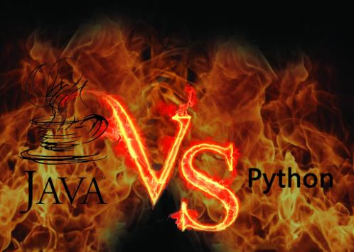
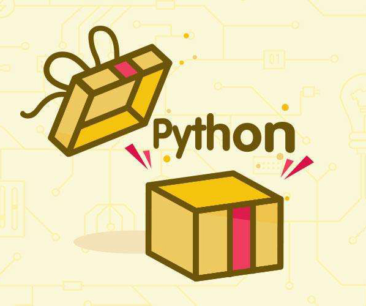

<!DOCTYPE html><html><head><meta charset="utf-8"><title>Python相比Java，谁更胜一筹呢？ | 技术学派</title><meta name="viewport" content="width=device-width,initial-scale=1,maximum-scale=1"><meta name="keywords" content="IT培训, Python, 大数据, 人工智能, Web前端, PHP, python"><meta name="description" content="近几年来，随着人工智能的火爆，Python一直处于各种流行编程语言排名的前列。该语言几乎可以用于任何事情。它旨在提高程序员的生产力，而不是他们编写的代码本身。Python可以用于Web开发、桌面应用程序开发、自动化脚本、复杂计算系统、科学计算、生命支持管理系统、物联网、游戏、机器人、自然语言处理等等。对于那些从未写过代码的人来说，Python代码也很简洁易懂。也正是因为这个原因，与其他语言相比，使"><meta name="keywords" content="python"><meta property="og:type" content="article"><meta property="og:title" content="Python相比Java，谁更胜一筹呢？"><meta property="og:url" content="http://www.JiShuXuePai.com/blog/学习答疑/学习答疑/Python相比Java，谁更胜一筹呢？/index.html"><meta property="og:site_name" content="技术学派"><meta property="og:description" content="近几年来，随着人工智能的火爆，Python一直处于各种流行编程语言排名的前列。该语言几乎可以用于任何事情。它旨在提高程序员的生产力，而不是他们编写的代码本身。Python可以用于Web开发、桌面应用程序开发、自动化脚本、复杂计算系统、科学计算、生命支持管理系统、物联网、游戏、机器人、自然语言处理等等。对于那些从未写过代码的人来说，Python代码也很简洁易懂。也正是因为这个原因，与其他语言相比，使"><meta property="og:locale" content="zh-CN"><meta property="og:image" content="http://www.jishuxuepai.com/blog/学习答疑/学习答疑/Python相比Java，谁更胜一筹呢？/01.jpg"><meta property="og:updated_time" content="2018-06-13T02:18:44.000Z"><meta name="twitter:card" content="summary"><meta name="twitter:title" content="Python相比Java，谁更胜一筹呢？"><meta name="twitter:description" content="近几年来，随着人工智能的火爆，Python一直处于各种流行编程语言排名的前列。该语言几乎可以用于任何事情。它旨在提高程序员的生产力，而不是他们编写的代码本身。Python可以用于Web开发、桌面应用程序开发、自动化脚本、复杂计算系统、科学计算、生命支持管理系统、物联网、游戏、机器人、自然语言处理等等。对于那些从未写过代码的人来说，Python代码也很简洁易懂。也正是因为这个原因，与其他语言相比，使"><meta name="twitter:image" content="http://www.jishuxuepai.com/blog/学习答疑/学习答疑/Python相比Java，谁更胜一筹呢？/01.jpg"><link rel="stylesheet" href="/libs/bootstrap/bootstrap-grid.css"><link rel="stylesheet" href="/libs/font-awesome/css/font-awesome.min.css"><link rel="stylesheet" href="/libs/titillium-web/styles.css"><link rel="stylesheet" href="/libs/source-code-pro/styles.css"><link rel="stylesheet" href="/css/style.css"><script src="/libs/jquery/jquery.min.js"></script><link rel="stylesheet" href="/libs/lightgallery/css/lightgallery.min.css"><link rel="stylesheet" href="/libs/justified-gallery/justifiedGallery.min.css"><script>var _hmt=_hmt||[];!function(){var e=document.createElement("script");e.src="//hm.baidu.com/hm.js?4c1bd812de3c30edbaa2b803c66f0a04";var t=document.getElementsByTagName("script")[0];t.parentNode.insertBefore(e,t)}()</script></head></html><body><div id="wrap"><header id="header"><div id="header-outer" class="outer"><div class="container"><div class="container-inner"><div id="header-title"><h1 class="logo-wrap"><a href="/" class="logo"></a></h1></div><div id="header-inner" class="nav-container"><a id="main-nav-toggle" class="nav-icon fa fa-bars">菜单</a><div class="nav-container-inner"><ul id="main-nav"><li class="main-nav-list-item"><a class="main-nav-list-link" href="/">主页</a></li><li class="main-nav-list-item"><a class="main-nav-list-link" href="/edu/index.html">学编程</a></li><li class="main-nav-list-item"><a class="main-nav-list-link" href="/blog/">博客</a></li><li class="main-nav-list-item"><a class="main-nav-list-link" href="/tips.html">学习建议</a></li><li class="main-nav-list-item"><a class="main-nav-list-link" href="/about.html">关于</a></li></ul><nav id="sub-nav"><div id="search-form-wrap"><form class="search-form"><input type="text" class="ins-search-input search-form-input" placeholder="搜索"> <button type="submit" class="search-form-submit"></button></form><div class="ins-search"><div class="ins-search-mask"></div><div class="ins-search-container"><div class="ins-input-wrapper"><input type="text" class="ins-search-input" placeholder="想要查找什么..."> <span class="ins-close ins-selectable"><i class="fa fa-times-circle"></i></span></div><div class="ins-section-wrapper"><div class="ins-section-container"></div></div></div></div><script>window.INSIGHT_CONFIG={TRANSLATION:{POSTS:"文章",PAGES:"页面",CATEGORIES:"分类",TAGS:"标签",UNTITLED:"(未命名)"},ROOT_URL:"/",CONTENT_URL:"/content.json"}</script><script src="/js/insight.js"></script></div></nav></div></div></div></div></div></header><div class="container"><div class="main-body container-inner"><div class="main-body-inner"><section id="main"><div class="main-body-header"><h1 class="header"><a class="page-title-link" href="/categories/学习答疑/">学习答疑</a><div class="author"></div></h1></div><div class="main-body-content"><article id="post-学习答疑/Python相比Java，谁更胜一筹呢？" class="article article-single article-type-post" itemscope itemprop="blogPost"><div class="article-inner"><header class="article-header"><h1 class="article-title" itemprop="name">Python相比Java，谁更胜一筹呢？</h1></header><div class="article-meta"><div class="article-date"><a href="/blog/学习答疑/学习答疑/Python相比Java，谁更胜一筹呢？/" class="article-date"><time datetime="2018-06-12T09:12:58.000Z" itemprop="datePublished">2018-06-12</time></a></div><div class="article-tag"><i class="fa fa-tag"></i> <a class="tag-link" href="/tags/python/">python</a></div></div><div class="article-entry" itemprop="articleBody"><p>近几年来，随着人工智能的火爆，Python一直处于各种流行编程语言排名的前列。该语言几乎可以用于任何事情。它旨在提高程序员的生产力，而不是他们编写的代码本身。Python可以用于Web开发、桌面应用程序开发、自动化脚本、复杂计算系统、科学计算、生命支持管理系统、物联网、游戏、机器人、自然语言处理等等。</p><p>对于那些从未写过代码的人来说，Python代码也很简洁易懂。也正是因为这个原因，与其他语言相比，使用Python编写的程序其可维护性也是很不错的。从商业角度来讲，这也可以很大程度上在降低开发成本的同时提高程序员的生产力。</p><h3 id="谁使用Python？"><a href="#谁使用Python？" class="headerlink" title="谁使用Python？"></a>谁使用Python？</h3><p>Python开发人员不断壮大，语言库的数量也在不断增长。这一切都使得Python语言成为世界上功能最多的编程语言之一，可以轻松适用于任何项目。同时我们也应认识到：Python在数据挖掘和机器学习等领域中十分流行。</p><p>为了更好的认识Python与Java语言的优点，我们将Python语言与流行的Java语言技术做一下比较。</p><p>一些开发人员声称Python比Java更有生产力。但更应先说明的是：<strong>Python和Java有什么区别？</strong></p><p><strong>Python VS Java</strong></p><p>Java是一个典型化的编程语言，这意味着变量名必须显示声明。相比之下，我们有动态类型的Python,它不需要声明变量。对于编程语言的动态和静态类型有很多的争论。</p><p>不过请注意这样一个特征：Python是一个有着简单句法的多样性的语言。这使得Python被广泛应用于多个领域来写脚本，快速开发应用等等。</p><p>Java支持跨平台应用，而Python几乎与所有现代操作系统兼容。Java对于初学者来说要比Python复杂很多。读Python代码也比读Java代码简单。Java比Python复杂得多。如果你没有技术类的背景，学Java是个很艰难的过程。Java和Python都是世界排名前十的语言，关于两门语言的特性，可以说有很多相似的地方，但也有很多本质上的不同。</p><h3 id="那么这两种语言相比，哪一种更胜一筹呢？"><a href="#那么这两种语言相比，哪一种更胜一筹呢？" class="headerlink" title="那么这两种语言相比，哪一种更胜一筹呢？"></a>那么这两种语言相比，哪一种更胜一筹呢？</h3><p></p><p><strong>1.开源</strong></p><p>Java和Python都是开源语言，简单地说，你可以自由的阅读它的源代码、对它做改动、把它的一部分用于新的自由软件中。在这一点上，Java和Python是不分上下的，唯一的差别可能在于Java代码的中文版本很多，Python主要是英文版的，所以对于学Python的人来说，英语非常非常重要。</p><p><strong>2.跨平台性</strong></p><p>Java和Python都是跨平台语言，在这一特性上，两者也是相同的，但他们的跨平台是有区别的，Java可以跨平台是因为Java的类库非常多，提供各个平台的接口；绝大多数的Python程序不做任何改变即可在主流计算机平台上运行。这一点来看Python似乎要更彻底一些，可惜并不是所有平台。在这点上看一半一半吧。</p><p><strong>3.面向对象</strong></p><p>Java语言的设计集中于对象及其接口，它提供了简单的类机制以及动态的接口模型。对象中封装了它的状态变量以及相应的方法，实现了模块化和信息隐藏;而类则提供了一类对象的原型，并且通过继承机制，子类可以使用父类所提供的方法，实现了代码的复用。　　</p><p>与Java对比，Python以一种非常强大又简单的方式实现面向对象编程。Python既支持面向过程的函数编程也支持面向对象的抽象编程。在面向过程的语言中，程序是由过程或仅仅是可重用代码的函数构建起来的。在面向对象的语言中，程序是由数据和功能组合而成的对象构建起来的。</p><p><strong>4.可扩展性</strong></p><p>在这一点上，Python和Java都具有良好的可扩展性，两者在这一点上同样可以说相同也可以说不相同。</p><p>Java的设计使它适合于一个不断发展的环境。在类库中可以自由地加入新的方法和实例变量而不会影响用户程序的执行。并且Java通过接口来支持多重继承，使之比严格的类继承具有更灵活的方式和扩展性。</p><p>Python的可扩展性不止于此，如果你需要你的一段关键代码运行得更快或者希望某些算法不公开，你可以把你的部分程序用C或C++编写，然后在你的Python程序中使用它们。你可以把Python嵌入你的C/C++程序，从而向你的程序用户提供脚本功能。</p><p><strong>5.类库</strong></p><p>只要是Java程序员，就没有不了解Java的类库的，Java之所以强大，并不是语法有多完善和强大，主要就是因为它有大量的类库。可以说在各类语言中，这一点上无出其右。其中中大量的规范，大量的库，只需要用基础的语法调用就能解决问题，所以项目上只要你使用的都是基础语法。</p><p>其实Python也是有自己的库的，而且标准库还是很庞大的。python有可定义的第三方库可以使用。它可以帮助你处理各种工作，包括正则表达式、文档生成、单元测试、线程、数据库、网页浏览器、密码系统、GUI、Tk和其他与系统有关的操作。只要安装了Python，所有这些功能都是可用的。这被称作Python的“功能齐全”理念。除了标准库以外，还有许多其他高质量的库，如wxPython、Twisted和Python图像库等等也不少。</p><p><strong>6.可读性</strong></p><p>Java和Python都可以说是很简单的语言，都有很好的可读性。当然这也有不同之处。</p><p>Java的简单是因为Java略去了运算符重载、多重继承等模糊的概念，并且通过实现自动垃圾收集大大简化了程序设计者的内存管理工作，所以学习起来相对要简单不少。</p><p>Python最大名气在于非常适合人类阅读。编程思维几乎完全和生活中的思维习惯一致。阅读一个良好的Python程序就感觉像是在读英语一样。同时虽然Python虽然是用C语言写的，但是它摈弃了C语言中非常复杂的指针，简化了Python的语法，同时Python采用强制缩进的方式使得代码具有极佳的可读性。所以不论是在阅读上还是在学习上，都非常简单容易，当然，这要求要有非常高的英语水平。</p><h3 id="Python人气爆棚的隐秘"><a href="#Python人气爆棚的隐秘" class="headerlink" title="Python人气爆棚的隐秘"></a>Python人气爆棚的隐秘</h3><p>Python之所以排名上的如此之快，和它本身的特色也有关系，他是一种简略、易用但专业、严谨的通用组合言语，或者叫胶水语，让普通人也能够很简单的入门，把各种基本程序元件组装在一起，和谐运作。比如任何一个人，只需情愿学习，能够在几天的时间里学会Python基础部分，然后干出许多许多工作，这种投入产出比可能是其他任何言语都无法相比的而且Python的使用很广，许多职业都会使用。</p><p></p><h3 id="总结"><a href="#总结" class="headerlink" title="总结"></a>总结</h3><p>我们可以看出Java和Python的特点有那么一点的相似，语言之间是互通的，都有那么一点的相似地方。Java现在还是第一，我不知道Python以后会不会超越Java，但是现在人们想起人工智能，第一个想借助的语言都会想起Python，所以说未来的Python可能会借助于人工智能超越Java。</p></div><footer class="article-footer"><a data-url="http://www.JiShuXuePai.com/blog/学习答疑/学习答疑/Python相比Java，谁更胜一筹呢？/" data-id="cjichm5uh00004jfyvd54hj31" class="article-share-link"><i class="fa fa-share"></i>分享到</a><script>!function(n){n("body").on("click",function(){n(".article-share-box.on").removeClass("on")}).on("click",".article-share-link",function(t){t.stopPropagation();var e,a=n(this),o=a.attr("data-url"),r=encodeURIComponent(o),i="article-share-box-"+a.attr("data-id"),s=a.offset();if(n("#"+i).length){if((e=n("#"+i)).hasClass("on"))return void e.removeClass("on")}else{var l=['<div id="'+i+'" class="article-share-box">','<input class="article-share-input" value="'+o+'">','<div class="article-share-links">','<a href="https://twitter.com/intent/tweet?url='+r+'" class="article-share-twitter" target="_blank" title="Twitter"></a>','<a href="https://www.facebook.com/sharer.php?u='+r+'" class="article-share-facebook" target="_blank" title="Facebook"></a>','<a href="http://pinterest.com/pin/create/button/?url='+r+'" class="article-share-pinterest" target="_blank" title="Pinterest"></a>','<a href="https://plus.google.com/share?url='+r+'" class="article-share-google" target="_blank" title="Google+"></a>',"</div>","</div>"].join("");e=n(l),n("body").append(e)}n(".article-share-box.on").hide(),e.css({top:s.top+25,left:s.left}).addClass("on")}).on("click",".article-share-box",function(t){t.stopPropagation()}).on("click",".article-share-box-input",function(){n(this).select()}).on("click",".article-share-box-link",function(t){t.preventDefault(),t.stopPropagation(),window.open(this.href,"article-share-box-window-"+Date.now(),"width=500,height=450")})}(jQuery)</script></footer></div></article><section id="comments"><div id="gitalk_frame"></div></section></div></section><aside id="sidebar"><a class="sidebar-toggle" title="Expand Sidebar"><i class="toggle icon"></i></a><div class="sidebar-top"><p>关注我 :</p><ul class="social-links"><li><a class="social-tooltip" title="火星时代" href="http://edu.hxsd.com/edunew/topics/webfull/index.html" target="_blank"><i class="icon fa fa-dribbble"></i></a></li><li><a class="social-tooltip" title="weibo" href="#" target="_blank"><i class="icon fa fa-weibo"></i></a></li><li><a class="social-tooltip" title="rss" href="/atom.xml" target="_blank"><i class="icon fa fa-rss"></i></a></li></ul></div><nav id="article-nav"><a href="/blog/学习答疑/学习答疑/什么样的行为出卖了你是一个程序员/" id="article-nav-newer" class="article-nav-link-wrap"><strong class="article-nav-caption">下一篇</strong><p class="article-nav-title">什么样的行为出卖了你是一个程序员</p><i class="icon fa fa-chevron-right" id="icon-chevron-right"></i> </a><a href="/blog/学习答疑/学习答疑/零基础学习Python，快速入门篇/" id="article-nav-older" class="article-nav-link-wrap"><strong class="article-nav-caption">上一篇</strong><p class="article-nav-title">零基础学习Python，快速入门篇</p><i class="icon fa fa-chevron-left" id="icon-chevron-left"></i></a></nav><div class="widgets-container"><div class="widget-wrap widget-list"><h3 class="widget-title">分类</h3><div class="widget"><ul class="category-list"><li class="category-list-item"><a class="category-list-link" href="/categories/animate/">animate</a><span class="category-list-count">17</span></li><li class="category-list-item"><a class="category-list-link" href="/categories/git/">git</a><span class="category-list-count">1</span></li><li class="category-list-item"><a class="category-list-link" href="/categories/html/">html</a><span class="category-list-count">2</span></li><li class="category-list-item"><a class="category-list-link" href="/categories/js/">js</a><span class="category-list-count">5</span></li><li class="category-list-item"><a class="category-list-link" href="/categories/php/">php</a><span class="category-list-count">3</span></li><li class="category-list-item"><a class="category-list-link" href="/categories/vue/">vue</a><span class="category-list-count">1</span></li><li class="category-list-item"><a class="category-list-link" href="/categories/学习答疑/">学习答疑</a><span class="category-list-count">28</span></li><li class="category-list-item"><a class="category-list-link" href="/categories/插件资源库/">插件资源库</a><span class="category-list-count">4</span></li></ul></div></div><link rel="stylesheet" href="/css/tech/toc.css"><div class="widget-wrap widget-list widget-toc"><h3 class="widget-title">目录</h3><div class="widget"><div class="toc"></div><link rel="stylesheet" href="https://cdnjs.cloudflare.com/ajax/libs/tocbot/3.0.5/tocbot.css"><script src="https://cdnjs.cloudflare.com/ajax/libs/tocbot/3.0.5/tocbot.min.js"></script><script>$(function(){$(".main-body-content").find("h1,h2,h3").each(function(t){$(this).attr("id")||$(this).attr("id","list"+t)}),tocbot.init({tocSelector:".toc",contentSelector:".main-body-content",headingSelector:"h1, h2, h3",collapseDepth:2,positionFixedSelector:".widget-toc",fixedSidebarOffset:595,includeHtml:!1})})</script></div></div><div class="widget-wrap widget-list"><h3 class="widget-title">标签</h3><div class="widget"><ul class="tag-list"><li class="tag-list-item"><a class="tag-list-link" href="/tags/C/">C</a><span class="tag-list-count">1</span></li><li class="tag-list-item"><a class="tag-list-link" href="/tags/php/">php</a><span class="tag-list-count">1</span></li><li class="tag-list-item"><a class="tag-list-link" href="/tags/python/">python</a><span class="tag-list-count">13</span></li><li class="tag-list-item"><a class="tag-list-link" href="/tags/web前端/">web前端</a><span class="tag-list-count">2</span></li></ul></div></div><div class="widget-wrap widget-float"><h3 class="widget-title">标签云</h3><div class="widget tagcloud"><a href="/tags/C/" style="font-size:10px">C</a> <a href="/tags/php/" style="font-size:10px">php</a> <a href="/tags/python/" style="font-size:20px">python</a> <a href="/tags/web前端/" style="font-size:15px">web前端</a></div></div><div class="widget-wrap widget-list"><h3 class="widget-title">链接</h3><div class="widget"><ul><li><a href="http://edu.hxsd.com/edunew/topics/webfull/index.html">火星时代</a></li></ul></div></div></div></aside><script>$(function(){$(window).scroll(function(){240<=$(document).scrollTop()?($("#sidebar .sidebar-toggle").addClass("fix"),"block"==$("#sidebar .sidebar-toggle").css("display")&&$(".is-position-fixed").css("top","35px")):$("#sidebar .sidebar-toggle").removeClass("fix")})})</script></div></div></div><footer id="footer"><div class="top"><div class="inner"><div class="list"><div class="left clearfix"><dl><dt>关于我们</dt><dd><a href="/about.html" target="_blank">公司简介</a></dd><dd><a href="edu/index.html" target="_blank">联系我们</a></dd></dl><dl><dt>校区攻略</dt><dd><a href="edu/index.html" target="_blank">校区环境</a></dd><dd><a href="edu/index.html" target="_blank">住宿攻略</a></dd><dd><a href="edu/index.html" target="_blank">来校路线</a></dd></dl><dl><dt>课程培训</dt><dd><a href="edu/python.html" target="_blank">Python</a></dd><dd><a href="edu/python.html" target="_blank">Web前端</a></dd><dd><a href="edu/python.html" target="_blank">PHP</a></dd><dd><a href="edu/python.html" target="_blank">人工智能</a></dd><dd><a href="edu/python.html" target="_blank">大数据</a></dd></dl><dl><dt>常见问答</dt><dd><a href="edu/index.html" target="_blank">学费学时</a></dd><dd><a href="edu/index.html" target="_blank">学习方法</a></dd></dl></div></div><div class="tel"><tel>176-0025-8815</tel><span>北京市海淀区杏石口路81号火星时代大厦</span></div><div class="weixin"><div class="w1"> <span>头条号</span></div><div class="w1"> <span>官方微信</span></div></div></div></div><div class="bot">Copyright 2018 技术学派 京ICP备15015508号-3</div></footer><link rel="stylesheet" href="https://unpkg.com/gitalk/dist/gitalk.css"><script src="https://unpkg.com/gitalk/dist/gitalk.min.js"></script><script>var gitalk=new Gitalk({clientID:"2fbbb9980b49019d99a7",clientSecret:"152dd10e83ef6595761ea2185304f9ac8263573f",repo:"jsxp",owner:"li-kang",admin:["li-kang"]});gitalk.render("gitalk_frame")</script><script src="/libs/lightgallery/js/lightgallery.min.js"></script><script src="/libs/lightgallery/js/lg-thumbnail.min.js"></script><script src="/libs/lightgallery/js/lg-pager.min.js"></script><script src="/libs/lightgallery/js/lg-autoplay.min.js"></script><script src="/libs/lightgallery/js/lg-fullscreen.min.js"></script><script src="/libs/lightgallery/js/lg-zoom.min.js"></script><script src="/libs/lightgallery/js/lg-hash.min.js"></script><script src="/libs/lightgallery/js/lg-share.min.js"></script><script src="/libs/lightgallery/js/lg-video.min.js"></script><script src="/libs/justified-gallery/jquery.justifiedGallery.min.js"></script><script src="/js/main.js"></script></div></body>